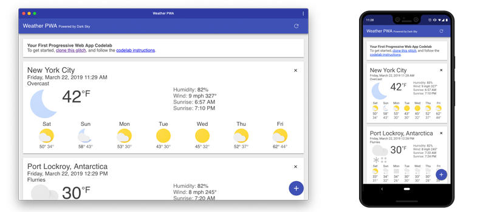
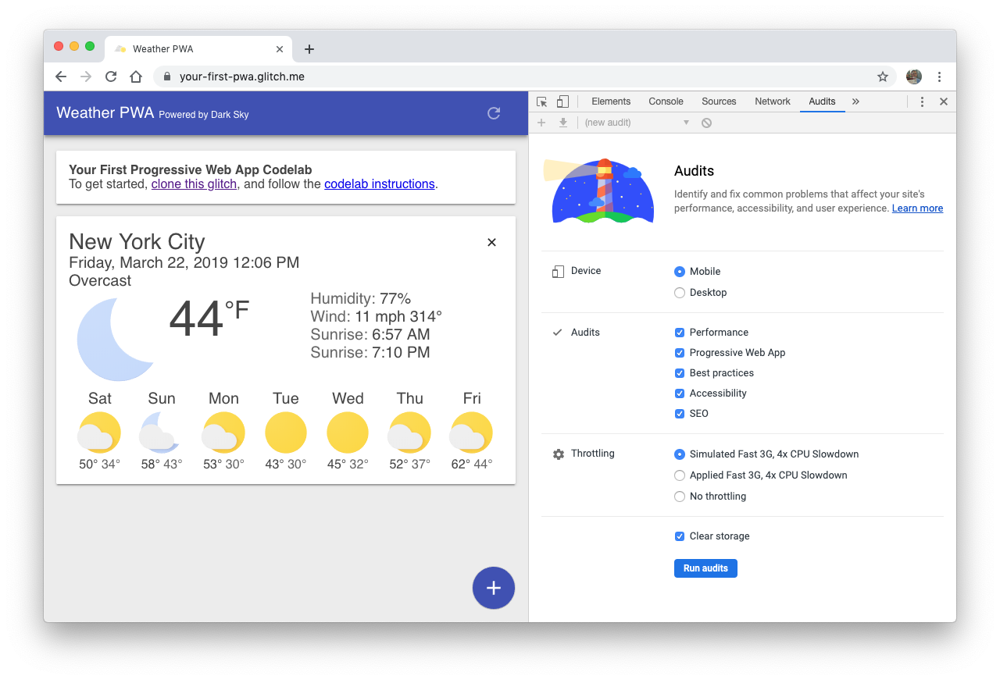
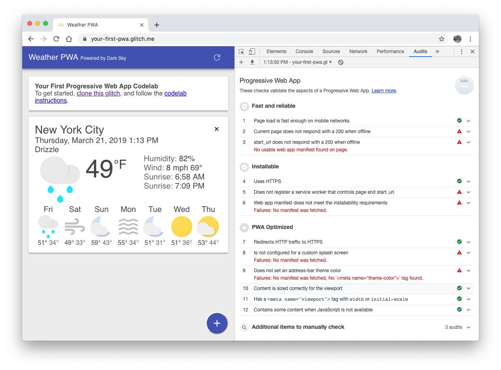
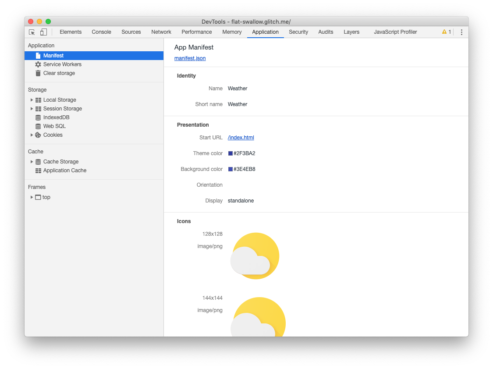

Last Updated: 2020
What makes a web app, a Progressive Web App?
Progressive Web Apps provide an installable, app-like experience on desktop and mobile that are built and delivered directly via the web. They're web apps that are fast and reliable. And most importantly, they're web apps that work in any browser. If you're building a web app today, you're already on the path towards building a Progressive Web App.
Fast & Reliable
Every web experience must be fast, and this is especially true for Progressive Web Apps. Fast refers to the time it takes to get meaningful content on screen, and provide an interactive experience in less than 5 seconds.
And, it must be reliably fast. It's hard to stress enough how much better reliable performance is. Think of it this way: the first load of a native app is frustrating. It's gated by an app store and a huge download, but once you get to a point where the app is installed, that up-front cost is amortized across all app starts, and none of those starts have a variable delay. Each application start is as fast as the last, no variance. A Progressive Web App must deliver this reliable performance that users have come to expect from any installed experience.
Installable
Progressive Web Apps can run in a browser tab, but are also installable. Bookmarking a site just adds a shortcut, but an installed Progressive Web App looks and behaves like all of the other installed apps. It launches from the same place as other apps launch. You can control the launch experience, including a customized splash screen, icons and more. It runs as an app, in an app window without an address bar or other browser UI. And like all other installed apps, it's a top level app in the task switcher.
Remember, it's critical that an installable PWA is fast and reliable. Users who install a PWA expect that their apps work, no matter what kind of network connection they're on. It's a baseline expectation that must be met by every installed app.
Mobile & Desktop
Using responsive design techniques, Progressive Web Apps work on both mobile and desktop, using a single code base between platforms. If you're considering writing a native app, take a look at the benefits that a PWA offers.
What you'll build
In this codelab, you're going to build a weather web app using Progressive Web App techniques. Your app will:
- Use responsive design, so it works on desktop or mobile.
- Be fast, using a service worker to precache the app resources (HTML, CSS, JavaScript, images) needed to run, and cache the weather data at runtime to improve performance.
- Be installable, using a web app manifest and the
beforeinstallpromptevent to notify the user it's installable.

What you'll learn
- How to create and add a web app manifest
- How to provide a simple offline experience
- How to provide a full offline experience
- How to make your app installable
This codelab is focused on Progressive Web Apps. Non-relevant concepts and code blocks are glossed over and are provided for you to simply copy and paste.
What you'll need
- A recent version of Chrome (74 or later)
PWAs are just web apps, and work in all browsers, but we'll be using a few features of the Chrome DevTools to better understand what's happening at the browser level, and use it to test the install experience. - Knowledge of HTML, CSS, JavaScript, and Chrome DevTools.
Get a key for the Dark Sky API
Our weather data comes from the Dark Sky API. In order to use it, you'll need to request an API key. It's easy to use, and free for non-commercial projects.
Verify your API key is working properly
To test that your API Key is working properly, make an HTTP request to the DarkSky API. Update the URL below to replace DARKSKY_API_KEY with your API key. If everything works, you should see the latest weather forecast for New York City.
https://api.darksky.net/forecast/DARKSKY_API_KEY/40.7720232,-73.9732319
Get the code
We've put everything you need for this project into a Git repo. To get started, you'll need to grab the code and open it in your favorite dev environment. For this codelab, we recommend using Glitch.
Strongly Recommended: Use Glitch to import the repo
Using Glitch is the recommended method for working through this codelab.
- Open a new browser tab and go to https://glitch.com.
- If you don't have an account, you'll need to sign up.
- Click New Project, then Clone from Git Repo.
- Clone https://github.com/googlecodelabs/your-first-pwapp.git and click OK.
- Once the repo has loaded, edit the
.envfile, and update it with your DarkSky API key. - Click the Show Live button to see the PWA in action.
Alternative: Download code & work locally
If you want to download the code and work locally, you'll need to have a recent version of Node, and code editor setup and ready to go.
- Unpack the downloaded zip file.
- Run
npm installto install the dependencies required to run the server. - Edit
server.jsand set your DarkSky API key. - Run
node server.jsto start the server on port 8000. - Open a browser tab to http://localhost:8000
What's our starting point?
Our starting point is a basic weather app designed for this codelab. The code has been overly simplified to show the concepts in this codelab, and it has little error handling. If you choose to reuse any of this code in a production app, make sure that you handle any errors and fully test all code.
Some things to try...
- Add a new city with the blue plus button in the bottom right corner.
- Refresh the data with the refresh button in the upper right corner.
- Delete a city using the x on the upper right of each city card.
- See how it works on desktop and mobile.
- See what happens when you go offline.
- Using Chrome's Network panel, see what happens when the network is throttled to Slow 3G.
- Add a delay to the forecast server by changing
FORECAST_DELAYinserver.js
Audit with Lighthouse
Lighthouse is an easy to use tool to help improve the quality of your sites and pages. It has audits for performance, accessibility, progressive web apps, and more. Each audit has a reference doc explaining why the audit is important, as well as how to fix it.

We'll use Lighthouse to audit our Weather app, and verify the changes we've made.
Let's run Lighthouse
- Open your project in a new tab.
- Open Chrome DevTools and switch to the Audits tab, DevTools shows a list of audit categories, leave them all enabled.
- Click Run audits, after 60-90 seconds, Lighthouse gives you a report on the page.
The Progressive Web App Audit
We're going to focus on the results of the Progressive Web App audit.

And there's a lot of red to focus on:
- ❗FAILED: Current page does not respond with a 200 when offline.
- ❗FAILED:
start_urldoes not respond with a 200 when offline. - ❗FAILED: Does not register a service worker that controls page and
start_url. - ❗FAILED: Web app manifest does not meet the installability requirements.
- ❗FAILED: Is not configured for a custom splash screen.
- ❗FAILED: Does not set an address-bar theme color.
Let's jump in and start fixing some of these issues!
By the end of this section, our weather app will pass the following audits:
- Web app manifest does not meet the installability requirements.
- Is not configured for a custom splash screen.
- Does not set an address-bar theme color.
Create the web app manifest
The web app manifest is a simple JSON file that gives you, the developer, the ability to control how your app appears to the user.
Using the web app manifest, your web app can:
- Tell the browser you want your app to open in a standalone window (
display). - Define what page is opened when the app is first launched (
start_url). - Define what the app should look like on the dock or app launcher (
short_name,icons). - Create a splash screen (
name,icons,colors). - Tell the browser to open the window in landscape, or portrait mode (
orientation). - And plenty more.
Create a file named public/manifest.json in your project and copy/paste the following contents:
public/manifest.json
{
"name": "Weather",
"short_name": "Weather",
"icons": [{
"src": "/images/icons/icon-128x128.png",
"sizes": "128x128",
"type": "image/png"
}, {
"src": "/images/icons/icon-144x144.png",
"sizes": "144x144",
"type": "image/png"
}, {
"src": "/images/icons/icon-152x152.png",
"sizes": "152x152",
"type": "image/png"
}, {
"src": "/images/icons/icon-192x192.png",
"sizes": "192x192",
"type": "image/png"
}, {
"src": "/images/icons/icon-256x256.png",
"sizes": "256x256",
"type": "image/png"
}, {
"src": "/images/icons/icon-512x512.png",
"sizes": "512x512",
"type": "image/png"
}],
"start_url": "/index.html",
"display": "standalone",
"background_color": "#3E4EB8",
"theme_color": "#2F3BA2"
}The manifest supports an array of icons, intended for different screen sizes. For this code lab, we've included a few others since we needed them for our iOS integration.
Add a link to the web app manifest
Next, we need to tell the browser about our manifest by adding a to each page in our app. Add the following line to the element in your index.html file.
public/index.html
<!-- CODELAB: Add link rel manifest -->
<link rel="manifest" href="/manifest.json">DevTools Detour
DevTools provides a quick, easy way to check your manifest.json file. Open up the Manifest pane on the Application panel. If you've added the manifest information correctly, you'll be able to see it parsed and displayed in a human-friendly format on this pane.

Add iOS meta tags & icons
Safari on iOS doesn't support the web app manifest (yet), so you'll need to add the traditional meta tags to the of your index.html file:
public/index.html
<!-- CODELAB: Add iOS meta tags and icons -->
<meta name="apple-mobile-web-app-capable" content="yes">
<meta name="apple-mobile-web-app-status-bar-style" content="black">
<meta name="apple-mobile-web-app-title" content="Weather PWA">
<link rel="apple-touch-icon" href="/images/icons/icon-152x152.png">